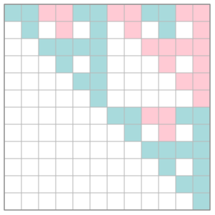

Install and build
The repository contains a CMake project that builds a static library tms_lib and the demo executable
tms_demo. The CMake file requires CMake 3.18, uses C++14, enables OpenMP by default when available,
and can optionally compile CUDA kernels through TMS_USE_CUDA.
CPU build
git clone https://github.com/nbonneel/tms_lib.git
cd tms_lib
cmake -S . -B build -DCMAKE_BUILD_TYPE=Release
cmake --build build --config Release
# executable:
./build/tms_demoCUDA build
cmake -S . -B build-cuda \
-DCMAKE_BUILD_TYPE=Release \
-DTMS_USE_CUDA=ON \
-DTMS_CUDA_ARCHITECTURES=75
cmake --build build-cuda --config Release
The default CUDA architecture is set to 75, which matches an RTX 2080. Override it with
-DTMS_CUDA_ARCHITECTURES="75;86;89" or another CMake CUDA architecture list.
Core model
Fields
A field is represented by Field<p,r>. Prime fields GF(p) use plain
int; extension fields GF(p^r) use GF_ext<p,r>, whose
integer label indexes precomputed arithmetic tables.
Matrices
Matrix<F> owns row-major data. MatrixView<F> is a non-owning
view used to pass workspaces and avoid allocations inside hot routines.
Digital sequences
A coordinate generator matrix maps the base-q digit vector of an integer index to
the base-q digits of one coordinate. Multi-dimensional sequences are arrays of such matrices.
Examples and diagnostics

MatrixBase::save_svg.
Console output (order of matrices generated in parallel may vary)
16
1
P =
{{1, 1, 1, 1, 1, 1, 1, 1, 1},
{0, 1, 0, 1, 0, 1, 0, 1, 0},
{0, 0, 1, 1, 0, 0, 1, 1, 0},
{0, 0, 0, 1, 0, 0, 0, 1, 0},
{0, 0, 0, 0, 1, 1, 1, 1, 0},
{0, 0, 0, 0, 0, 1, 0, 1, 0},
{0, 0, 0, 0, 0, 0, 1, 1, 0},
{0, 0, 0, 0, 0, 0, 0, 1, 0},
{0, 0, 0, 0, 0, 0, 0, 0, 1}
}
PascalPowIntMatrix(3) =
{{1, 1, 1, 1, 1, 1, 1, 1, 1},
{0, 1, 0, 1, 0, 1, 0, 1, 0},
{0, 0, 1, 1, 0, 0, 1, 1, 0},
{0, 0, 0, 1, 0, 0, 0, 1, 0},
{0, 0, 0, 0, 1, 1, 1, 1, 0},
{0, 0, 0, 0, 0, 1, 0, 1, 0},
{0, 0, 0, 0, 0, 0, 1, 1, 0},
{0, 0, 0, 0, 0, 0, 0, 1, 0},
{0, 0, 0, 0, 0, 0, 0, 0, 1}
}
PascalTranslateFieldMatrix(3) =
{{1, 3, 2, 1, 3, 2, 1, 3, 2},
{0, 1, 0, 2, 0, 3, 0, 1, 0},
{0, 0, 1, 3, 0, 0, 3, 2, 0},
{0, 0, 0, 1, 0, 0, 0, 3, 0},
{0, 0, 0, 0, 1, 3, 2, 1, 0},
{0, 0, 0, 0, 0, 1, 0, 2, 0},
{0, 0, 0, 0, 0, 0, 1, 3, 0},
{0, 0, 0, 0, 0, 0, 0, 1, 0},
{0, 0, 0, 0, 0, 0, 0, 0, 1}
}
P^3 =
{{1, 1, 1, 1, 1, 1, 1, 1, 1},
{0, 1, 0, 1, 0, 1, 0, 1, 0},
{0, 0, 1, 1, 0, 0, 1, 1, 0},
{0, 0, 0, 1, 0, 0, 0, 1, 0},
{0, 0, 0, 0, 1, 1, 1, 1, 0},
{0, 0, 0, 0, 0, 1, 0, 1, 0},
{0, 0, 0, 0, 0, 0, 1, 1, 0},
{0, 0, 0, 0, 0, 0, 0, 1, 0},
{0, 0, 0, 0, 0, 0, 0, 0, 1}
}
S1 :
{{1, 1, 0, 0, 1, 1, 1, 0, 0, 1, 1, 1, 0, 0, 1, 1, 1, 0, 0, 1},
{0, 1, 1, 1, 0, 0, 1, 1, 1, 0, 0, 1, 1, 1, 0, 0, 1, 1, 1, 0},
{0, 0, 1, 1, 1, 0, 0, 1, 1, 1, 0, 0, 1, 1, 1, 0, 0, 1, 1, 1},
{0, 0, 0, 1, 0, 0, 0, 0, 1, 0, 0, 0, 0, 1, 0, 0, 0, 0, 1, 0},
{0, 0, 0, 0, 1, 0, 0, 0, 0, 1, 0, 0, 0, 0, 1, 0, 0, 0, 0, 1},
{0, 0, 0, 0, 0, 1, 1, 0, 0, 1, 0, 0, 0, 0, 0, 1, 1, 0, 0, 1},
{0, 0, 0, 0, 0, 0, 1, 1, 1, 0, 0, 0, 0, 0, 0, 0, 1, 1, 1, 0},
{0, 0, 0, 0, 0, 0, 0, 1, 1, 1, 0, 0, 0, 0, 0, 0, 0, 1, 1, 1},
{0, 0, 0, 0, 0, 0, 0, 0, 1, 0, 0, 0, 0, 0, 0, 0, 0, 0, 1, 0},
{0, 0, 0, 0, 0, 0, 0, 0, 0, 1, 0, 0, 0, 0, 0, 0, 0, 0, 0, 1},
{0, 0, 0, 0, 0, 0, 0, 0, 0, 0, 1, 1, 0, 0, 1, 1, 1, 0, 0, 1},
{0, 0, 0, 0, 0, 0, 0, 0, 0, 0, 0, 1, 1, 1, 0, 0, 1, 1, 1, 0},
{0, 0, 0, 0, 0, 0, 0, 0, 0, 0, 0, 0, 1, 1, 1, 0, 0, 1, 1, 1},
{0, 0, 0, 0, 0, 0, 0, 0, 0, 0, 0, 0, 0, 1, 0, 0, 0, 0, 1, 0},
{0, 0, 0, 0, 0, 0, 0, 0, 0, 0, 0, 0, 0, 0, 1, 0, 0, 0, 0, 1},
{0, 0, 0, 0, 0, 0, 0, 0, 0, 0, 0, 0, 0, 0, 0, 1, 1, 0, 0, 1},
{0, 0, 0, 0, 0, 0, 0, 0, 0, 0, 0, 0, 0, 0, 0, 0, 1, 1, 1, 0},
{0, 0, 0, 0, 0, 0, 0, 0, 0, 0, 0, 0, 0, 0, 0, 0, 0, 1, 1, 1},
{0, 0, 0, 0, 0, 0, 0, 0, 0, 0, 0, 0, 0, 0, 0, 0, 0, 0, 1, 0},
{0, 0, 0, 0, 0, 0, 0, 0, 0, 0, 0, 0, 0, 0, 0, 0, 0, 0, 0, 1}
}
S2 :
{{1, 1, 0, 1, 1, 0, 0, 0, 0, 0, 0, 0, 0, 0, 0, 0, 0, 0, 0, 0},
{0, 1, 0, 1, 0, 0, 0, 0, 0, 0, 0, 0, 0, 0, 0, 0, 0, 0, 0, 0},
{0, 0, 1, 0, 1, 0, 0, 0, 0, 0, 0, 0, 0, 0, 0, 0, 0, 0, 0, 0},
{0, 0, 0, 1, 1, 0, 0, 0, 0, 0, 0, 0, 0, 0, 0, 0, 0, 0, 0, 0},
{0, 0, 0, 0, 1, 0, 0, 0, 0, 0, 0, 0, 0, 0, 0, 0, 0, 0, 0, 0},
{0, 0, 0, 0, 0, 1, 1, 0, 1, 1, 0, 0, 0, 0, 0, 0, 0, 0, 0, 0},
{0, 0, 0, 0, 0, 0, 1, 0, 1, 0, 0, 0, 0, 0, 0, 0, 0, 0, 0, 0},
{0, 0, 0, 0, 0, 0, 0, 1, 0, 1, 0, 0, 0, 0, 0, 0, 0, 0, 0, 0},
{0, 0, 0, 0, 0, 0, 0, 0, 1, 1, 0, 0, 0, 0, 0, 0, 0, 0, 0, 0},
{0, 0, 0, 0, 0, 0, 0, 0, 0, 1, 0, 0, 0, 0, 0, 0, 0, 0, 0, 0},
{0, 0, 0, 0, 0, 0, 0, 0, 0, 0, 1, 1, 0, 1, 1, 0, 0, 0, 0, 0},
{0, 0, 0, 0, 0, 0, 0, 0, 0, 0, 0, 1, 0, 1, 0, 0, 0, 0, 0, 0},
{0, 0, 0, 0, 0, 0, 0, 0, 0, 0, 0, 0, 1, 0, 1, 0, 0, 0, 0, 0},
{0, 0, 0, 0, 0, 0, 0, 0, 0, 0, 0, 0, 0, 1, 1, 0, 0, 0, 0, 0},
{0, 0, 0, 0, 0, 0, 0, 0, 0, 0, 0, 0, 0, 0, 1, 0, 0, 0, 0, 0},
{0, 0, 0, 0, 0, 0, 0, 0, 0, 0, 0, 0, 0, 0, 0, 1, 1, 0, 1, 1},
{0, 0, 0, 0, 0, 0, 0, 0, 0, 0, 0, 0, 0, 0, 0, 0, 1, 0, 1, 0},
{0, 0, 0, 0, 0, 0, 0, 0, 0, 0, 0, 0, 0, 0, 0, 0, 0, 1, 0, 1},
{0, 0, 0, 0, 0, 0, 0, 0, 0, 0, 0, 0, 0, 0, 0, 0, 0, 0, 1, 1},
{0, 0, 0, 0, 0, 0, 0, 0, 0, 0, 0, 0, 0, 0, 0, 0, 0, 0, 0, 1}
}
characteristic :
{{1, 0, 0, 1, 0, 1, 0, 0, 1, 0, 1, 0, 0, 1, 0, 1, 0, 0, 1, 0},
{0, 1, 1, 1, 1, 0, 1, 1, 1, 1, 0, 1, 1, 1, 1, 0, 1, 1, 1, 1},
{0, 0, 1, 1, 0, 0, 0, 1, 1, 0, 0, 0, 1, 1, 0, 0, 0, 1, 1, 0},
{0, 0, 0, 1, 1, 0, 0, 0, 1, 1, 0, 0, 0, 1, 1, 0, 0, 0, 1, 1},
{0, 0, 0, 0, 1, 0, 0, 0, 0, 1, 0, 0, 0, 0, 1, 0, 0, 0, 0, 1},
{0, 0, 0, 0, 0, 1, 0, 0, 1, 0, 0, 0, 0, 0, 0, 1, 0, 0, 1, 0},
{0, 0, 0, 0, 0, 0, 1, 1, 1, 1, 0, 0, 0, 0, 0, 0, 1, 1, 1, 1},
{0, 0, 0, 0, 0, 0, 0, 1, 1, 0, 0, 0, 0, 0, 0, 0, 0, 1, 1, 0},
{0, 0, 0, 0, 0, 0, 0, 0, 1, 1, 0, 0, 0, 0, 0, 0, 0, 0, 1, 1},
{0, 0, 0, 0, 0, 0, 0, 0, 0, 1, 0, 0, 0, 0, 0, 0, 0, 0, 0, 1},
{0, 0, 0, 0, 0, 0, 0, 0, 0, 0, 1, 0, 0, 1, 0, 1, 0, 0, 1, 0},
{0, 0, 0, 0, 0, 0, 0, 0, 0, 0, 0, 1, 1, 1, 1, 0, 1, 1, 1, 1},
{0, 0, 0, 0, 0, 0, 0, 0, 0, 0, 0, 0, 1, 1, 0, 0, 0, 1, 1, 0},
{0, 0, 0, 0, 0, 0, 0, 0, 0, 0, 0, 0, 0, 1, 1, 0, 0, 0, 1, 1},
{0, 0, 0, 0, 0, 0, 0, 0, 0, 0, 0, 0, 0, 0, 1, 0, 0, 0, 0, 1},
{0, 0, 0, 0, 0, 0, 0, 0, 0, 0, 0, 0, 0, 0, 0, 1, 0, 0, 1, 0},
{0, 0, 0, 0, 0, 0, 0, 0, 0, 0, 0, 0, 0, 0, 0, 0, 1, 1, 1, 1},
{0, 0, 0, 0, 0, 0, 0, 0, 0, 0, 0, 0, 0, 0, 0, 0, 0, 1, 1, 0},
{0, 0, 0, 0, 0, 0, 0, 0, 0, 0, 0, 0, 0, 0, 0, 0, 0, 0, 1, 1},
{0, 0, 0, 0, 0, 0, 0, 0, 0, 0, 0, 0, 0, 0, 0, 0, 0, 0, 0, 1}
}
full_product =
{{1, 1, 1, 1, 1, 1, 1, 1, 1, 1, 1, 1, 1, 1, 1, 1, 1, 1, 1, 1, 1, 1, 1, 1, 1, 1, 1, 1, 1, 1, 1, 1, 1, 1, 1, 1},
{0, 0, 0, 0, 0, 0, 0, 0, 0, 0, 0, 0, 0, 0, 0, 0, 0, 0, 0, 0, 0, 0, 0, 0, 0, 0, 0, 0, 0, 0, 0, 0, 0, 0, 0, 0},
{0, 0, 0, 0, 0, 0, 0, 0, 0, 0, 0, 0, 0, 0, 0, 0, 0, 0, 0, 0, 0, 0, 0, 0, 0, 0, 0, 0, 0, 0, 0, 0, 0, 0, 0, 0},
{0, 0, 0, 0, 0, 0, 0, 0, 0, 0, 0, 0, 0, 0, 0, 0, 0, 0, 0, 0, 0, 0, 0, 0, 0, 0, 0, 0, 0, 0, 0, 0, 0, 0, 0, 0},
{0, 0, 0, 0, 1, 1, 1, 1, 2, 2, 2, 2, 3, 3, 3, 3, 4, 4, 4, 4, 0, 0, 0, 0, 1, 1, 1, 1, 2, 2, 2, 2, 3, 3, 3, 3},
{0, 0, 0, 0, 0, 0, 0, 0, 0, 0, 0, 0, 0, 0, 0, 0, 0, 0, 0, 0, 0, 0, 0, 0, 0, 0, 0, 0, 0, 0, 0, 0, 0, 0, 0, 0},
{0, 0, 0, 0, 0, 0, 0, 0, 0, 0, 0, 0, 0, 0, 0, 0, 0, 0, 0, 0, 0, 0, 0, 0, 0, 0, 0, 0, 0, 0, 0, 0, 0, 0, 0, 0},
{0, 0, 0, 0, 0, 0, 0, 0, 0, 0, 0, 0, 0, 0, 0, 0, 0, 0, 0, 0, 0, 0, 0, 0, 0, 0, 0, 0, 0, 0, 0, 0, 0, 0, 0, 0},
{0, 0, 0, 0, 0, 0, 0, 0, 1, 1, 1, 1, 3, 3, 3, 3, 1, 1, 1, 1, 0, 0, 0, 0, 0, 0, 0, 0, 1, 1, 1, 1, 3, 3, 3, 3},
{0, 0, 0, 0, 0, 0, 0, 0, 0, 0, 0, 0, 0, 0, 0, 0, 0, 0, 0, 0, 0, 0, 0, 0, 0, 0, 0, 0, 0, 0, 0, 0, 0, 0, 0, 0},
{0, 0, 0, 0, 0, 0, 0, 0, 0, 0, 0, 0, 0, 0, 0, 0, 0, 0, 0, 0, 0, 0, 0, 0, 0, 0, 0, 0, 0, 0, 0, 0, 0, 0, 0, 0},
{0, 0, 0, 0, 0, 0, 0, 0, 0, 0, 0, 0, 0, 0, 0, 0, 0, 0, 0, 0, 0, 0, 0, 0, 0, 0, 0, 0, 0, 0, 0, 0, 0, 0, 0, 0},
{0, 0, 0, 0, 0, 0, 0, 0, 0, 0, 0, 0, 1, 1, 1, 1, 4, 4, 4, 4, 0, 0, 0, 0, 0, 0, 0, 0, 0, 0, 0, 0, 1, 1, 1, 1},
{0, 0, 0, 0, 0, 0, 0, 0, 0, 0, 0, 0, 0, 0, 0, 0, 0, 0, 0, 0, 0, 0, 0, 0, 0, 0, 0, 0, 0, 0, 0, 0, 0, 0, 0, 0},
{0, 0, 0, 0, 0, 0, 0, 0, 0, 0, 0, 0, 0, 0, 0, 0, 0, 0, 0, 0, 0, 0, 0, 0, 0, 0, 0, 0, 0, 0, 0, 0, 0, 0, 0, 0},
{0, 0, 0, 0, 0, 0, 0, 0, 0, 0, 0, 0, 0, 0, 0, 0, 0, 0, 0, 0, 0, 0, 0, 0, 0, 0, 0, 0, 0, 0, 0, 0, 0, 0, 0, 0},
{0, 0, 0, 0, 0, 0, 0, 0, 0, 0, 0, 0, 0, 0, 0, 0, 1, 1, 1, 1, 0, 0, 0, 0, 0, 0, 0, 0, 0, 0, 0, 0, 0, 0, 0, 0},
{0, 0, 0, 0, 0, 0, 0, 0, 0, 0, 0, 0, 0, 0, 0, 0, 0, 0, 0, 0, 0, 0, 0, 0, 0, 0, 0, 0, 0, 0, 0, 0, 0, 0, 0, 0},
{0, 0, 0, 0, 0, 0, 0, 0, 0, 0, 0, 0, 0, 0, 0, 0, 0, 0, 0, 0, 0, 0, 0, 0, 0, 0, 0, 0, 0, 0, 0, 0, 0, 0, 0, 0},
{0, 0, 0, 0, 0, 0, 0, 0, 0, 0, 0, 0, 0, 0, 0, 0, 0, 0, 0, 0, 0, 0, 0, 0, 0, 0, 0, 0, 0, 0, 0, 0, 0, 0, 0, 0},
{0, 0, 0, 0, 0, 0, 0, 0, 0, 0, 0, 0, 0, 0, 0, 0, 0, 0, 0, 0, 1, 1, 1, 1, 1, 1, 1, 1, 1, 1, 1, 1, 1, 1, 1, 1},
{0, 0, 0, 0, 0, 0, 0, 0, 0, 0, 0, 0, 0, 0, 0, 0, 0, 0, 0, 0, 0, 0, 0, 0, 0, 0, 0, 0, 0, 0, 0, 0, 0, 0, 0, 0},
{0, 0, 0, 0, 0, 0, 0, 0, 0, 0, 0, 0, 0, 0, 0, 0, 0, 0, 0, 0, 0, 0, 0, 0, 0, 0, 0, 0, 0, 0, 0, 0, 0, 0, 0, 0},
{0, 0, 0, 0, 0, 0, 0, 0, 0, 0, 0, 0, 0, 0, 0, 0, 0, 0, 0, 0, 0, 0, 0, 0, 0, 0, 0, 0, 0, 0, 0, 0, 0, 0, 0, 0},
{0, 0, 0, 0, 0, 0, 0, 0, 0, 0, 0, 0, 0, 0, 0, 0, 0, 0, 0, 0, 0, 0, 0, 0, 1, 1, 1, 1, 2, 2, 2, 2, 3, 3, 3, 3},
{0, 0, 0, 0, 0, 0, 0, 0, 0, 0, 0, 0, 0, 0, 0, 0, 0, 0, 0, 0, 0, 0, 0, 0, 0, 0, 0, 0, 0, 0, 0, 0, 0, 0, 0, 0},
{0, 0, 0, 0, 0, 0, 0, 0, 0, 0, 0, 0, 0, 0, 0, 0, 0, 0, 0, 0, 0, 0, 0, 0, 0, 0, 0, 0, 0, 0, 0, 0, 0, 0, 0, 0},
{0, 0, 0, 0, 0, 0, 0, 0, 0, 0, 0, 0, 0, 0, 0, 0, 0, 0, 0, 0, 0, 0, 0, 0, 0, 0, 0, 0, 0, 0, 0, 0, 0, 0, 0, 0},
{0, 0, 0, 0, 0, 0, 0, 0, 0, 0, 0, 0, 0, 0, 0, 0, 0, 0, 0, 0, 0, 0, 0, 0, 0, 0, 0, 0, 1, 1, 1, 1, 3, 3, 3, 3},
{0, 0, 0, 0, 0, 0, 0, 0, 0, 0, 0, 0, 0, 0, 0, 0, 0, 0, 0, 0, 0, 0, 0, 0, 0, 0, 0, 0, 0, 0, 0, 0, 0, 0, 0, 0},
{0, 0, 0, 0, 0, 0, 0, 0, 0, 0, 0, 0, 0, 0, 0, 0, 0, 0, 0, 0, 0, 0, 0, 0, 0, 0, 0, 0, 0, 0, 0, 0, 0, 0, 0, 0},
{0, 0, 0, 0, 0, 0, 0, 0, 0, 0, 0, 0, 0, 0, 0, 0, 0, 0, 0, 0, 0, 0, 0, 0, 0, 0, 0, 0, 0, 0, 0, 0, 0, 0, 0, 0},
{0, 0, 0, 0, 0, 0, 0, 0, 0, 0, 0, 0, 0, 0, 0, 0, 0, 0, 0, 0, 0, 0, 0, 0, 0, 0, 0, 0, 0, 0, 0, 0, 1, 1, 1, 1},
{0, 0, 0, 0, 0, 0, 0, 0, 0, 0, 0, 0, 0, 0, 0, 0, 0, 0, 0, 0, 0, 0, 0, 0, 0, 0, 0, 0, 0, 0, 0, 0, 0, 0, 0, 0},
{0, 0, 0, 0, 0, 0, 0, 0, 0, 0, 0, 0, 0, 0, 0, 0, 0, 0, 0, 0, 0, 0, 0, 0, 0, 0, 0, 0, 0, 0, 0, 0, 0, 0, 0, 0},
{0, 0, 0, 0, 0, 0, 0, 0, 0, 0, 0, 0, 0, 0, 0, 0, 0, 0, 0, 0, 0, 0, 0, 0, 0, 0, 0, 0, 0, 0, 0, 0, 0, 0, 0, 0}
}
truncated_product =
{{1, 1, 1, 1, 1, 1, 1, 1, 1, 1, 1, 1, 1, 1, 1},
{0, 0, 0, 0, 0, 0, 0, 0, 0, 0, 0, 0, 0, 0, 0},
{0, 0, 0, 0, 0, 0, 0, 0, 0, 0, 0, 0, 0, 0, 0},
{0, 0, 0, 0, 0, 0, 0, 0, 0, 0, 0, 0, 0, 0, 0},
{0, 0, 0, 0, 1, 1, 1, 1, 2, 2, 2, 2, 3, 3, 3},
{0, 0, 0, 0, 0, 0, 0, 0, 0, 0, 0, 0, 0, 0, 0},
{0, 0, 0, 0, 0, 0, 0, 0, 0, 0, 0, 0, 0, 0, 0},
{0, 0, 0, 0, 0, 0, 0, 0, 0, 0, 0, 0, 0, 0, 0},
{0, 0, 0, 0, 0, 0, 0, 0, 1, 1, 1, 1, 3, 3, 3},
{0, 0, 0, 0, 0, 0, 0, 0, 0, 0, 0, 0, 0, 0, 0},
{0, 0, 0, 0, 0, 0, 0, 0, 0, 0, 0, 0, 0, 0, 0},
{0, 0, 0, 0, 0, 0, 0, 0, 0, 0, 0, 0, 0, 0, 0},
{0, 0, 0, 0, 0, 0, 0, 0, 0, 0, 0, 0, 1, 1, 1},
{0, 0, 0, 0, 0, 0, 0, 0, 0, 0, 0, 0, 0, 0, 0},
{0, 0, 0, 0, 0, 0, 0, 0, 0, 0, 0, 0, 0, 0, 0}
}
ret = progressive
combination =
{{1, 0, 0, 0, 0, 0, 0, 0, 0},
{0, 1, 0, 0, 0, 0, 0, 0, 0},
{0, 0, 1, 0, 0, 0, 0, 0, 0},
{0, 0, 0, 1, 0, 0, 0, 0, 0},
{1, 1, 1, 1, 1, 1, 1, 1, 1},
{0, 1, 2, 3, 4, 0, 1, 2, 3},
{0, 0, 1, 3, 1, 0, 0, 1, 3},
{1, 3, 4, 2, 1, 3, 4, 2, 1},
{0, 1, 1, 2, 3, 0, 3, 3, 1}
}
combination rank = 9
combination_lr rank = 7
1528 ms, t (naive) :
0 1 2 1 2 2 2 3 3 3 3 2 3 4 3 3 3 3 3 4 4 4 4 4 5 3 4 5 4 4 4 4 5 6 5 5 5 5 6 5
1081 ms, t ([Marion et al. 2020]):
0 1 2 1 2 2 2 3 3 3 3 2 3 4 3 3 3 3 3 4 4 4 4 4 5 3 4 5 4 4 4 4 5 6 5 5 5 5 6 5
Matrix 0
{{1, 1, 2},
{0, 1, 2},
{0, 0, 1}
}
Matrix 1
{{1, 2, 1},
{0, 1, 0},
{0, 0, 1}
}
Matrix 2
{{1, 2, 1},
{0, 1, 1},
{0, 0, 1}
}
Matrix 3
{{1, 2, 1},
{0, 1, 2},
{0, 0, 1}
}
Matrix 4
{{1, 2, 2},
{0, 1, 0},
{0, 0, 1}
}
Matrix 5
{{1, 2, 2},
{0, 1, 1},
{0, 0, 1}
}
Matrix 6
{{1, 2, 2},
{0, 1, 2},
{0, 0, 1}
}
Matrix 7
{{1, 1, 1},
{0, 1, 0},
{0, 0, 1}
}
Matrix 8
{{1, 1, 1},
{0, 1, 1},
{0, 0, 1}
}
Matrix 9
{{1, 1, 1},
{0, 1, 2},
{0, 0, 1}
}
Matrix 10
{{1, 1, 2},
{0, 1, 0},
{0, 0, 1}
}
Matrix 11
{{1, 1, 2},
{0, 1, 1},
{0, 0, 1}
}
Matrix 0
{{1, 2, 1},
{0, 1, 2},
{0, 0, 1}
}
rank = 3
Matrix 1
{{1, 2, 2},
{0, 1, 0},
{0, 0, 1}
}
rank = 3
Matrix 2
{{1, 2, 1},
{0, 1, 1},
{0, 0, 1}
}
rank = 3
Matrix 3
{{1, 1, 1},
{0, 1, 1},
{0, 0, 1}
}
rank = 3
Matrix 4
{{1, 1, 1},
{0, 1, 0},
{0, 0, 1}
}
rank = 3
Matrix 5
{{1, 1, 1},
{0, 1, 2},
{0, 0, 1}
}
rank = 3
Matrix 6
{{1, 2, 2},
{0, 1, 2},
{0, 0, 1}
}
rank = 3
Matrix 7
{{1, 2, 2},
{0, 1, 1},
{0, 0, 1}
}
rank = 3
Matrix 8
{{1, 1, 2},
{0, 1, 1},
{0, 0, 1}
}
rank = 3
Matrix 9
{{1, 1, 2},
{0, 1, 2},
{0, 0, 1}
}
rank = 3
Matrix 10
{{1, 2, 1},
{0, 1, 0},
{0, 0, 1}
}
rank = 3
Matrix 11
{{1, 1, 2},
{0, 1, 0},
{0, 0, 1}
}
rank = 3
t value according to matrix : 2
t value according to point set : 2
t value according to scrambled point set : 2
generalized l2 discrepancy before scrambling (CPU): 1.96662e-05, time taken: 9444 ms
generalized l2 discrepancy before scrambling (GPU): 1.96884e-05, time taken: 4132 ms
generalized l2 discrepancy after scrambling: 1.94257e-05
star discrepancy in 3D (2300 points, CPU) : 0.00895658, time taken: 9577 ms
star discrepancy in 3D (2300 points, GPU) : 0.0111261, time taken: 5966 ms
Minimal construction
typedef Field<2,1> F2;
typedef Field<3,1> F3;
const int m = 20;
// Joe--Kuo / UNSW Sobol direction numbers in base 2.
SobolMatrix<F2> s0(SOBOL_JOE_KUO_GF2, 0, m);
SobolMatrix<F2> s1(SOBOL_JOE_KUO_GF2, 1, m);
// OneTwo and QuadQuad tables.
SobolMatrix<F2> one_two(SOBOL_ONETWO_SEQ_GF2, 8, m);
SobolMatrix<F3> quadquad(SOBOL_QUADQUAD_GF3, 4, m);
// Coordinates.
std::vector<double> x = s0.get_point_coordinates(1 << 10);
std::vector<double> y = s1.get_point_coordinates(1 << 10);
draw_2D_points<F2>(s0.view(), s1.view(), 1024, "points.svg");API reference
template<int p, int r> struct Field;
template<int p, int r> struct GF_ext;
template<int p, int r> using GF = std::conditional_t<r == 1, int, GF_ext<p,r>>;
template<int p, int r, typename T> auto gf_reduce(T x);
template<int p, int r> auto gf_from_int(int x);
template<class F> int gf_to_raw_index(typename F::T x);
template<class F> void decompose_integer_into_base(long long val,
typename F::T* digits,
int max_digits);GF(p) and small extension fields GF(p^r) through precomputed add/sub/mul/div/inverse tables.p^r ≤ MAX_GF for table-backed extension fields. gf_from_int injects integers into the prime subfield, whereas raw labels such as base-q digits are usually assigned with T{digit}.O(1). Digit decomposition is O(max_digits).template<class F> struct MatrixView;
template<class F> struct Matrix;
template<class Derived, class F> struct MatrixBase;
Matrix<F>::Matrix(int rows, int cols);
Matrix<F>::Matrix(const MatrixView<F>& view);
MatrixView<F> Matrix<F>::view();
int MatrixBase<Derived,F>::rank(MatrixView<F> tmpPivoted) const;
int MatrixBase<Derived,F>::rank() const;
int MatrixBase<Derived,F>::checkDet(MatrixView<F> tmpMatT,
MatrixView<F> tmpInv,
MatrixView<F> tmpiAc,
MatrixView<F> tmpriA) const;
int MatrixBase<Derived,F>::checkDet() const;
Matrix<F> MatrixBase<Derived,F>::get_inverse(MatrixView<F> tmpMatT,
MatrixView<F> tmpiAc,
MatrixView<F> tmpriA) const;
bool MatrixBase<Derived,F>::save_svg(const char* filename,
int cell_size = 24,
int margin = 6,
bool draw_grid = true) const;rank copies into the supplied workspace and performs Gaussian elimination with row/column pivoting. Time O(m n min(m,n)); memory O(mn) for the workspace.checkDetsave_svg writes to a file and is only thread-safe for different filenames.template<int p, int r>
void pascal_pow_int(GF<p,r>* mat, int n, int power);
template<int p, int r>
void pascal_pow_field(GF<p,r>* mat, int n, GF<p,r> power);
template<class F, int N, int Power>
struct PascalPowIntMatrix {
static MatrixView<F> value();
};
template<class F, int N, int Power>
struct PascalTranslateFieldMatrix {
static MatrixView<F> value();
};
template<class F>
void tensor_product(MatrixView<F> A,
MatrixView<F> B,
MatrixView<F> result,
int truncate_row = -1,
int truncate_col = -1);O(n²). Full tensor product is O(A.m A.n B.m B.n); truncated mode computes only the requested top-left block.Pascal*Matrix::value() helpers store one static buffer per template instantiation. Treat first-call initialization as not thread-safe unless protected externally; after initialization, read-only concurrent use is safe.enum SobolPredefinedTable {
SOBOL_JOE_KUO_GF2,
SOBOL_ONETWO_SEQ_GF2,
SOBOL_FAURE_LEMIEUX_IS_DEC_GF2,
SOBOL_QUADQUAD_GF3
};
template<class F>
struct SobolMatrix : public Matrix<F> {
SobolMatrix(SobolPredefinedTable table,
int dim_number,
int matrix_size);
};
template<class F>
void fill_sobol(MatrixView<F> out,
MatrixView<F> V,
MatrixView<F> poly);SOBOL_JOE_KUO_GF2 uses Joe--Kuo direction numbers from the UNSW Sobol page. SOBOL_FAURE_LEMIEUX_IS_DEC_GF2 uses the IS-dec table associated with Faure--Lemieux constructions. SOBOL_ONETWO_SEQ_GF2 and SOBOL_QUADQUAD_GF3 expose the library's named constructions.dim_number is interpreted in the numbering of the selected table. matrix_size is the number of base digits available; point generation with too many points for the matrix size is invalid.O(matrix_size² · degree) in the straightforward recurrence. The stored matrix uses O(matrix_size²) field elements.template<class F>
void combine_matrices(const MatrixView<F>* matrices,
const int* row_choices,
int num_matrices,
int max_columns,
MatrixView<F> result);
template<class F>
bool is_t0_progressive(const MatrixView<F>* matrices,
int num_matrices,
int max_m);
template<class F>
std::vector<int> t_values(const MatrixView<F>* matrices,
int dim,
int max_m);
template<class F>
std::vector<int> t_values_naive(const MatrixView<F>* matrices,
int dim,
int max_m);combine_matricesrow_choices[i] rows from each matrix into a stacked matrix. Time proportional to the number of copied coefficients; memory is the caller-provided output.is_t0_progressivet=0 pass determinant tests up to max_m. Worst case is combinatorial in dimension and prefix size; early determinant failure can prune work.t_valuesm=1..max_m, using the efficient algorithmic strategy of Marion--Godin--L'Ecuyer rather than the brute-force implementation.t_values_naivetemplate<class F>
void get_points(const MatrixView<F>* matrices,
int dim,
long long n_pts,
double* pts);
void padd_least_significant_digits(double* pts,
long long n_pts,
int dim,
int base,
int m,
long long seed);
OwenTreeND make_random_owen_tree_nd(int dim,
int base,
int depth,
uint64_t seed = 0x123456789ABCDEF0ULL);
void apply_owen_permutation_real(const double* points_in,
double* points_out,
int npts,
int dim,
int m,
const OwenTreeND& tree);[0,1)^dim, and apply randomized digit scrambling.O(n_pts · dim · m²) with dense matrix-vector multiplication, where m is the number of digits. Padding/scrambling are linear in the number of generated digits.pts[point_id * dim + dim_id].double generalized_l2_discrepancy(const double* points,
int npts,
int dim,
int block_size = 128,
bool use_gpu = true);
double star_discrepancy(const double* points,
int npts,
int dim,
bool gpu = true);
int t_value_pointset(const double* points,
int npts,
int dim,
int base,
bool dbg = false);
#ifdef TMS_USE_CUDA
extern "C" double generalized_l2_discrepancy_squared_cuda(const double* h_points,
int npts,
int dim,
int stride_dim = 0,
int threads_per_block = 256,
int i_chunk_size = 1024);
extern "C" double generalized_l2_discrepancy_cuda(const double* h_points,
int npts,
int dim,
int stride_dim = 0,
int threads_per_block = 256,
int i_chunk_size = 1024);
extern "C" int star_discrepancy_cuda_exhaustive_feasible(const double* points,
int npts,
int dim,
int stride_dim,
unsigned long long max_candidate_boxes);
extern "C" double star_discrepancy_exact_cuda_exhaustive(const double* points,
int npts,
int dim,
int stride_dim,
unsigned long long max_candidate_boxes);
#endifO(npts² · dim) pairwise formula. CPU code uses blocking; CUDA can accelerate the quadratic summation when built with TMS_USE_CUDA.t_value_pointsett_values is preferable when generator matrices are available.template<class F>
void draw_2D_points(MatrixView<F> M1,
MatrixView<F> M2,
int nb_points,
const std::string& svg_filename);
struct ProjectionHighlight {
int d0;
int d1;
const char* color;
double width;
};
bool draw_2d_projections_svg(double* points,
int dim,
long long n_points,
const char* filename,
const ProjectionHighlight* highlights = 0,
int n_highlights = 0,
int cell_size = 90,
int cell_inner_margin = 4,
int outer_margin = 8,
int label_band = 22,
double point_radius = 0.55,
const char* point_color = "#111111",
double point_opacity = 0.25,
const char* default_border_color = "#A8B0FF",
double default_border_width = 1.2,
int label_font_size = 11);
bool plot_discrepancy_curves_svg(const std::vector<DiscrepancyCurve>& curves,
const std::vector<ReferenceCurveSpec>& refs,
const DiscrepancyPlotOptions& opt,
const char* filename);draw_2d_projections_svg draws all coordinate-pair projections of a point set in a grid and can highlight selected pairs.O(n_points · dim²) SVG elements in the worst case. File size grows quickly with both point count and dimension.CPU/GPU behavior
Default CPU path
The CPU library is the baseline and requires only C++14. OpenMP is enabled by default when CMake can find it. Matrix construction, rank, determinant tests, t-values, point generation, and SVG plotting work without CUDA.
Optional CUDA path
With -DTMS_USE_CUDA=ON, tms_lib_cuda_kernels.cu is added to the static library and
TMS_USE_CUDA exposes CUDA entry points for generalized L2 discrepancy and exhaustive star discrepancy.
The public wrappers keep use_gpu/gpu boolean switches so callers can fall back to CPU behavior.
Complexity summary
Fast linear algebra
Dense matrix multiplication is cubic in matrix size for square matrices. Rank is Gaussian-elimination-like.
checkDet is specialized for the anchored-minor tests appearing in digital-net construction and avoids
pivoting; it is faster than generic rank for the intended cases but not a replacement for robust determinant tests
on arbitrary matrices.
Search routines
t_values and is_t0_progressive are dominated by the number of prefix combinations and
linear-algebra tests. They are therefore highly sensitive to dimension, maximum digit depth, early failures, and
the chosen generator matrices.
Discrepancy
Generalized L2 discrepancy is quadratic in the number of points and linear in dimension. Exact star discrepancy is combinatorial in dimension; use it for small dimensions or as a validation metric, not as a large-scale high-dimensional benchmark.
Plotting
SVG point and projection plots are intentionally simple and portable. They are convenient for diagnostics, but large point sets can produce very large SVG files.
References
- I. M. Sobol. “On the distribution of points in a cube and the approximate evaluation of integrals.” USSR Computational Mathematics and Mathematical Physics, 7(4), 1967. doi:10.1016/0041-5553(67)90144-9.
- S. Joe and F. Y. Kuo. “Remark on Algorithm 659: Implementing Sobol’s quasirandom sequence generator.” ACM Transactions on Mathematical Software, 29(1), 2003. doi:10.1145/641876.641879.
- S. Joe and F. Y. Kuo. “Constructing Sobol sequences with better two-dimensional projections.” SIAM Journal on Scientific Computing, 30(5), 2008. doi:10.1137/070709359. Direction-number tables: UNSW Sobol sequence generator.
- C. Lemieux and H. Faure. “A construction of irreducible Sobol’ sequences.” arXiv:1910.04084.
- N. Bonneel, D. Coeurjolly, J.-C. Iehl and V. Ostromoukhov. “Sobol’ Sequences with Guaranteed-Quality 2D Projections.” ACM Transactions on Graphics 44(4), SIGGRAPH 2025. doi:10.1145/3730821.
- V. Ostromoukhov, N. Bonneel, D. Coeurjolly and J.-C. Iehl. “Quad-Optimized Low-Discrepancy Sequences.” SIGGRAPH Conference Papers, 2024. doi:10.1145/3641519.3657431.
- P. Marion, M. Godin and P. L’Ecuyer. “An algorithm to compute the t-value of a digital net and of its projections.” Journal of Computational and Applied Mathematics 371, 2020. arXiv:1910.02277.